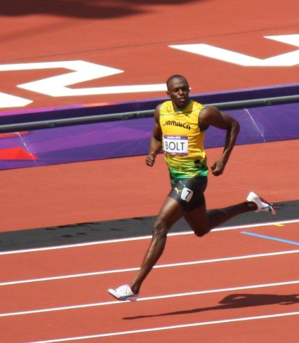
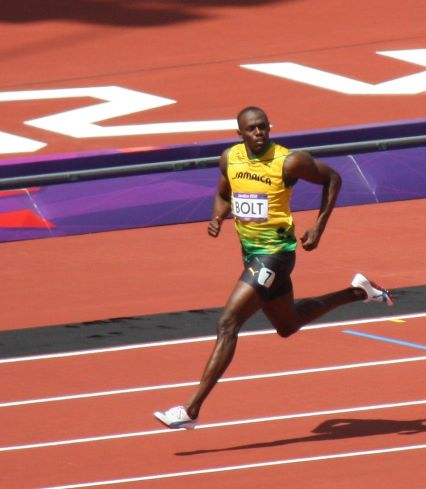

The island of Jamaica

Jamaica is an island in the Caribbean that is surrounded by the Caribbean Sea. It is also referred to as the “Land of Wood and Water”. It gained its independence on August 6, 1962. Because of its history, they have a rich and diverse culture. Its motto is “Out of Many One People.” The population as of 2022 is 2.83 million. The Jamaican flag is black, green, and gold. Other nicknames for Jamaica are Jamdown and Jamrock.
Symbols in Jamaica:
- Coat of Arms
- National flag – Black, Green, and Gold
- National tree – Blue Mahoe
- National bird – Doctor Bird
- National flower – Lignum Vitae
- National fruit - Ackee
The genre of reggae started in Jamaica. This little island has a tropical climate amidst this they competed in bob sledding at the Winter Olympics in 1988 and a movie was made about the Jamaican’s Bob sled team called Cool Runnings.